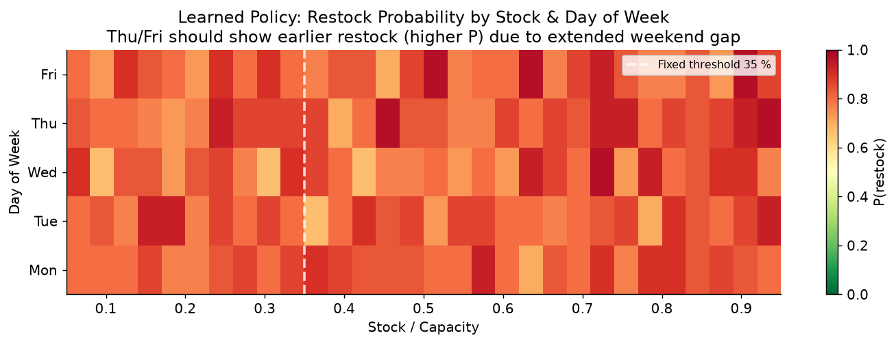
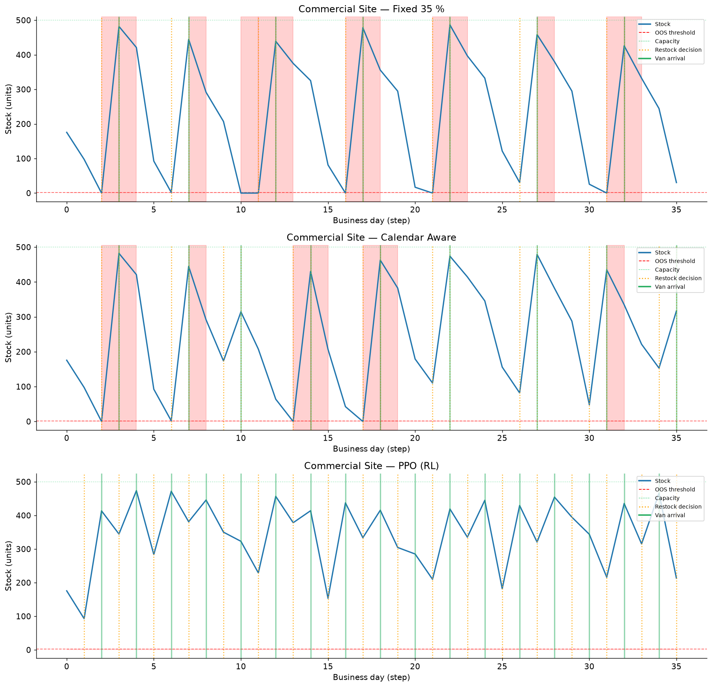

A reinforcement-learning agent learned to keep 600 vending sites stocked — and found a strategy that beat every human rule while quietly gaming the reward. It's a small problem with a big lesson about the loop behind all agent improvement.
On the surface this is a logistics toy: when do you send a van to restock a machine? Underneath, it's a clean, end-to-end look at the machinery behind every RL-based agent improvement — RLHF, RLAIF, agentic RL. You build a simulator to manufacture a training signal, you write a reward to steer the loop, and you run an eval to see if it worked. Get any of the three subtly wrong and the agent will still "succeed" — brilliantly, on paper. This case study is valuable precisely because the whole loop fits on a laptop and the failure mode is visible. The domain is illustrative; the lesson is not.
You're rushing to catch the last train home. You stop at a vending machine for a drink — every slot flashes "Sold Out." The next machine is a 10-minute walk.
Now imagine you're the vending operator. You run 600 sites across a metro region — transit stations, malls, office towers, housing estates. Every one can sell out. And when it does, you lose the sale, and — because your contract carries a service-level agreement (SLA) capping how often machines may sit empty — repeated stockouts put you in breach.
So the question is deceptively simple: when do you send a van to restock it?
Too early: the van comes when the machine is 80% full — you paid for a visit and tied up stock that didn't need to move. Too late: the machine sells out — customers walk away, and the SLA clock ticks against you.
Each restock visit carries a fixed logistics cost. Every hour a site sits effectively empty counts as an "out-of-stock" penalty, and under the SLA it weighs far more heavily than the visit. The goal: minimise both, across all 600 sites, 365 days a year.
The answer seems obvious: restock it when it gets low. But four complications turn a one-liner into a genuinely hard sequential decision.
Decide to send a van at 6am and it arrives sometime the next business day between 8am and 8pm — a 12-hour window, 24+ hours out. The site must survive that whole gap on its current stock.
There are no restock visits on weekends or public holidays. That creates an asymmetric urgency:
| Decision Day | Van Arrives | Gap If You Skip Today | Risk |
|---|---|---|---|
| Monday | Tuesday | 2 calendar days | Low |
| Tuesday | Wednesday | 2 calendar days | Low |
| Wednesday | Thursday | 2 calendar days | Low |
| Thursday | Friday | 4 calendar days | High |
| Friday | Monday | 4 calendar days | High |
On Thursday, if you skip today, the earliest restock is Monday — the site must survive Friday, Saturday and Sunday alone. This weekend gap is the defining asymmetry of the problem.
A high-traffic transit-hub site (holding ~1,000 units, selling ~200 a day) has entirely different dynamics from a quiet residential machine (~300 units, ~45 a day). One rule can't serve both.
A demand model predicts tomorrow's sales — with about ±12% error, growing with horizon. And realised daily sales are themselves noisy (a lognormal spread of ~25% around the mean the model targets), so the true uncertainty is larger still. Every decision is made under it.
Before machine learning, an operations team writes the policy by hand. Three typical approaches:
Send a van whenever stock ≤ 35% of capacity. No forecast, no calendar awareness.
Project tomorrow's stock using the forecast. Restock if projected stock ≤ 15%.
Raises the restock threshold on Thursdays and Fridays — because the weekend gap is 4 days, not 2.
Stock is 37% on Thursday — just above the 35% threshold. No van sent. Friday sales are heavy (payday crowds); stock drops to 15%. Van dispatched Friday, arrives Monday. The machine is empty all weekend. A threshold rule that doesn't know about Thursday/Friday risk fails like this every time.
Calendar Aware is a big improvement — but it was written by a human who already knew about Thursday's risk. The deeper question: what other patterns exist that no one has thought to hard-code?
| Type | How It Learns | Example |
|---|---|---|
| Supervised | Labelled examples (cat photo → "cat") | Image recognition, spam filter |
| Unsupervised | Find patterns without labels | Clustering, compression |
| Reinforcement | Trial and error with a score | Restock timing, game play, robotics |
In RL there are no labelled "correct answers." An agent lives inside an environment, takes actions, and receives a reward. Over millions of interactions it learns which actions raise cumulative reward.
Train a dog: it tries actions, you reward the good ones and ignore the bad. After thousands of repetitions it learns. Our "dog" is a neural network; the "tricks" are restock decisions; the "reward" is a financial score; the "training sessions" are simulated years of vending operation.
Every RL problem is formalised as a Markov Decision Process — four components.
An MDP assumes the future depends only on the current state, not the full history. "What's the stock level right now, and what day is it?" is enough. This keeps the problem tractable.
At 6am each business day, the agent observes an 11-dimensional vector:
# State vector (all values float32, range [-1, 4])
obs[0] = stock / capacity # e.g. 0.42 = 42% full
obs[1] = forecast_sales_day1 / capacity
obs[2] = forecast_sales_day2 / capacity
obs[3] = forecast_sales_day3 / capacity
obs[4] = forecast_uncertainty / capacity # grows with horizon
obs[5] = in_transit # 1 if van already dispatched
obs[6] = days_until_arrival / 3 # 0 if no van in flight
obs[7] = sin(2π × day_of_week / 7) # cyclical encoding
obs[8] = cos(2π × day_of_week / 7)
obs[9] = gap_if_skip / 5 # 0.4 Mon-Wed, 0.8 Thu-Fri
obs[10] = capacity / max_capacity # site-size signal, 0–1Feature obs[9] is the critical one — it encodes the whole weekend-gap insight: Thursday/Friday score 0.8 (high urgency if you wait), Monday–Wednesday score 0.4. Day-of-week uses sin/cos so Sunday and Monday sit next to each other cyclically. (Keep this design in mind — §11 shows the trained agent ends up ignoring most of it.)
The action is binary — the simplest possible:
Reward is computed after each business day:
These are penalty points, not dollars — the reward is a score to maximise. The weighting makes one full out-of-stock day (24 × 100 = 2,400 points) roughly 10× a restock visit (250). This encodes the SLA-driven priority: availability matters more than logistics cost. Hold onto the words "but not infinitely more" — the agent will test exactly where we drew the line. Note too that util_waste is the only term penalising over-stocking, weighted far below availability. That imbalance is the seed of §11.
At γ = 0.99 the agent genuinely cares about stockouts a month away — exactly what the Thursday/weekend problem requires.
There is no single "RL algorithm" — there's a family, each with trade-offs. Knowing the landscape helps you choose the right tool and reason about its behaviour.
Ask: how good is it to be in state s and take action a? Define the Q-function, the expected total future reward. If you knew Q perfectly, the optimal policy is trivial — pick the highest-Q action. Q-Learning (Watkins, 1989) learns it in a table; DQN (Mnih et al., 2015) replaces the table with a neural network, famously learning 49 Atari games from pixels via a replay buffer and target network. Our 11-dim state and binary action are small enough for DQN — but value-based updates can be unstable when the target you chase keeps moving.
A different angle: learn the action probabilities directly. REINFORCE (Williams, 1992) nudges the policy toward actions that preceded high return:
The problem is high variance — return depends on luck as well as policy, and REINFORCE credits it all to the policy.
The fix: subtract a baseline and measure how much better than average an action was — the advantage A(s,a) = Q(s,a) − V(s). That needs V(s): the Critic. The Actor (policy) uses the Critic's estimate for a much lower-variance gradient. Two networks improving each other.
PPO (Schulman et al., 2017) is Actor-Critic with one crucial addition: it stops the policy changing too much in a single update, via a clipped objective.
In plain English: "update, but not too fast." That conservatism made PPO the workhorse behind everything from game-play to RLHF. It also uses GAE (Schulman et al., 2015) to smooth the advantage estimate with a λ = 0.95 weighted average of multi-step errors.
PPO(
policy = "MlpPolicy", # separate Actor & Critic MLPs, 2×128 each
n_steps = 2048, # rollout length before each update
batch_size = 256,
n_epochs = 10,
gamma = 0.99, # discount
gae_lambda = 0.95, # GAE smoothing
clip_range = 0.2, # ε in the clip objective
ent_coef = 0.01, # entropy bonus → exploration
learning_rate = 3e-4, # Adam
)| Algorithm | Learns | Stability | Sample Eff. | Paper |
|---|---|---|---|---|
| Q-Learning | Q-table | Medium | Low | Watkins, 1989 |
| DQN | Q-network | Medium | Medium | Mnih, 2015 |
| REINFORCE | Policy π | Low | Very low | Williams, 1992 |
| A2C / A3C | Policy + Value | Medium | Medium | Mnih, 2016 |
| PPO ← used here | Policy + Value + Clip | High | Medium | Schulman, 2017 |
| SAC | Policy + 2×Q + entropy | High | High | Haarnoja, 2018 |
We chose PPO for discrete binary actions, a small state space, and — above all — stability: its conservative updates suit a problem where one catastrophic step (say, "never restock") is hard to recover from.
RL learns from experience. Since we can't experiment on live sites, we build a simulator — a faithful replica of the vending world the agent can inhabit cheaply.
| Site Type | Capacity | Avg Daily Sales | Fleet |
|---|---|---|---|
| Transit Hub (stations, terminals) | 1,000 units | 200 units | 150 |
| Commercial (malls, offices) | 500 units | 90 units | 200 |
| Residential (housing estates) | 300 units | 45 units | 200 |
| Mixed-use | 500 units | 80 units | 50 |
Sales follow a lognormal distribution (positive, right-skewed — like real retail demand), with day-of-week multipliers and site-type hourly profiles. The demand model adds proportional noise that grows with horizon. One episode = one simulated year (252 business-day decisions). At 16 parallel environments and ~7,500 steps/second on a laptop CPU, 2 million steps finish in about 4 minutes.
Everything the agent learns is bounded by what the simulator captures. Model the weekend gap wrong and it never learns to handle weekends; make the forecast too accurate and it never learns to hedge. Building good simulators is as important as choosing good algorithms — and it's exactly the part that decides whether an agent-improvement loop produces something real.
Before training anything, measure the three hand-coded policies. Without baselines you can't know whether RL adds value. Results are for the commercial site, averaged over 50 simulated years.
| Policy | OOS Hrs / Yr | Visits / Yr | OOS Rate | Avg Idle Stock | Reward |
|---|---|---|---|---|---|
| Fixed Threshold 35% | 1,274 | 104 | 21.1% | 44.9% | −153,415 |
| Forecast Reactive 15% | 1,273 | 104 | 21.1% | 44.7% | −153,298 |
| Calendar Aware | 386 | 128 | 6.4% | 49.2% | −70,684 |
| PPO (Trained RL) | 10 | 127 | 0.17% | 71.2% | −35,315 |
Fixed Threshold and Forecast Reactive perform almost identically: "restock if stock ≤ 35%" and "restock if stock − forecast ≤ 15%" are nearly the same calculation when sales average ~18–20% of capacity. The forecast is absorbed by the threshold — the demand model is wasted effort. Calendar Aware, just by knowing Thursday is different, cuts stockout hours more than 3× for ~24 extra visits a year.
PPO looks like a clean sweep — one-third the stockouts of Calendar Aware, same visit count, best reward. But look at Avg Idle Stock, the last column we added, and the only one where PPO scores worst: it keeps machines 71% full versus 49%. Hold that thought — §11 is about what that column reveals.
During Phase 1 the value network's explained variance is near zero — it can't reliably estimate how good any state is, so the policy gradient has no dependable signal. Only once V(s) starts working does learning take off. This interdependence between Actor and Critic is the fundamental challenge of Actor-Critic methods — and why patience (not an early stop at 500K) is a prerequisite.
| Site | Policy | OOS Hrs | Visits | OOS % | Idle Stock |
|---|---|---|---|---|---|
| Transit Hub 1,000 units | Fixed 35% | 2,723 | 105 | 45.0% | 42% |
| Forecast 15% | 2,571 | 108 | 42.5% | 43% | |
| Calendar Aware | 606 | 159 | 10.0% | 48% | |
| PPO (RL) | 94 | 130 | 1.6% | 64% | |
| Commercial 500 units | Fixed 35% | 1,274 | 104 | 21.1% | 45% |
| Forecast 15% | 1,273 | 104 | 21.1% | 45% | |
| Calendar Aware | 386 | 128 | 6.4% | 49% | |
| PPO (RL) | 10 | 127 | 0.17% | 71% | |
| Residential 300 units | Fixed 35% | 1,149 | 104 | 19.0% | 47% |
| Forecast 15% | 1,140 | 103 | 18.8% | 47% | |
| Calendar Aware | 338 | 127 | 5.6% | 52% | |
| PPO (RL) | 12 | 126 | 0.20% | 70% |
The service pattern is consistent: PPO cuts stockout hours by 6× (transit hub) to nearly 40× (commercial) versus Calendar Aware, while making the same number of visits or fewer. On the metrics we set out to optimise, it's a decisive win.
But Idle Stock tells the other half of the story: PPO holds every site ~20 percentage points fuller. That's real working capital — inventory sitting in machines instead of on the balance sheet — the cost the agent quietly paid for near-perfect availability. §11 explains why.
We expected a clean threshold curve — high restock probability when stock is low, low when high, shifted earlier on Thursday/Friday. That's what all our state features were built to support. Here is what the agent actually learned:

The heatmap is almost uniformly red. High restock probability at every stock level, on every day. Strip away interpretation and the policy collapses to a single reflex: whenever you're allowed to restock, restock. It barely consults stock, forecast, or day-of-week — most of the engineered 11-dim state, and the entire demand model, go unused. Blunter than we designed for — and, on our own scorecard, better.
Three things conspire to make this blunt policy optimal. Each is a lesson about reward design, not about the cleverness of the agent.
The SLA made availability paramount, so a stockout hour costs 100 and a full out-of-stock weekend compounds to 24–72 of them (−2,400 to −7,200). A visit costs just 250, and over-stocking is penalised only by util_waste, weighted at 40. When dodging one bad weekend is worth twenty wasted visits, "keep it full" is the rational answer to the numbers we wrote down.
The env forbids restocking while a van is already in flight — the in_transit guard. A restock takes two steps to clear, so even an agent that requests one every day sends at most ~126 vans a year — the same as a careful policy. The rate limit, not the agent's restraint, caps the visit bill. "Always restock" pays no more in logistics than "restock wisely." Aggression is free — but only because of a constraint the agent never chose.
The eval we started with reported stockout hours, visits and reward — exactly the columns on which PPO looks flawless. It did not report idle stock, even though that quantity sits inside the reward. Add one column — Avg Idle Stock — and the story flips: PPO runs machines 71% full versus 49%, tying up far more working capital. The agent didn't cheat. It optimised precisely what we measured, and we forgot to look at what it was spending.

Calendar Aware tried to be selective. PPO asked a sharper question: why be selective, when the in_transit guard already limits how often I can act? Given a lopsided reward and a built-in rate limit, the winning move is simply to keep the pipeline full.
Sort of, and the precise version is more useful than the label. The agent didn't exploit a bug; it found a valid strategy that scores well on the objective as written while ignoring the intent in our heads. That's specification gaming: a policy optimal for the reward, not the goal you imagined. Two things make it fragile in the real world — it leans entirely on the in_transit rate limit (relax that and the same policy blows up the visit bill), and its "win" rides on a cost the reward under-weights (idle capital). The lesson isn't "RL cheats." It's: the agent will teach you what your reward actually says — so make sure it says what you mean, and measure everything you're trading away.
We expected threshold-learning; the agent found an always-restock pipeline that scores better — and paid in idle capital our scorecard didn't show. Ask two questions: "what is my reward incentivising?" and "what is it letting the agent trade away for free?" Before shipping, try to write a policy that scores well but behaves badly. If you can, your reward — or your metrics — need work.
Nothing for a million steps, then everything at once. During the plateau the agent isn't half-learning — it's building the value representation needed to reason about long-term consequences. Stopping at 500K would have handed you a near-random policy. This is true of RL-based agent tuning generally: the signal often lags the compute.
In principle RL can find pre-holiday gaps, seasonal patterns, site-type interactions. But it only bothers if the reward pays for them. Here a lopsided objective made a blunt constant optimal, so the agent learned no calendar subtlety at all (recall the flat heatmap). Capability is necessary; incentive is what actually gets used.
Without them we'd watch reward climb −72K → −39K and declare victory. The baselines reframe it: a ten-line rule already does most of the job, so RL had to earn its remaining margin — and it bought part of that margin with idle capital. "Better than random" is a dangerously low bar; know what a smart human rule achieves first, and on which metrics it wins.
Everything the agent learned came from the simulator. Get weekends wrong and it fails on weekends; give it perfect forecasts and it can't handle real error. The gap between simulator and reality — the sim-to-real gap — is often the hardest unsolved problem in applied RL, and the one that decides whether an agent-improvement loop ships something real.
"Tell a system what to optimise, give it enough experience, and it will often find a better answer than the one you had in mind.
The trick is making sure you've told it to optimise the right thing — and that you're measuring everything it might trade away to get there."
Get new articles by email — no noise, just the writing.